Streamlining HCD Resources at Cox
Transforming scattered resources into a unified self-service hub
Empowering 55,000+ Cox employees to independently discover Human-Centered Design resources while reducing HCD team operational overhead
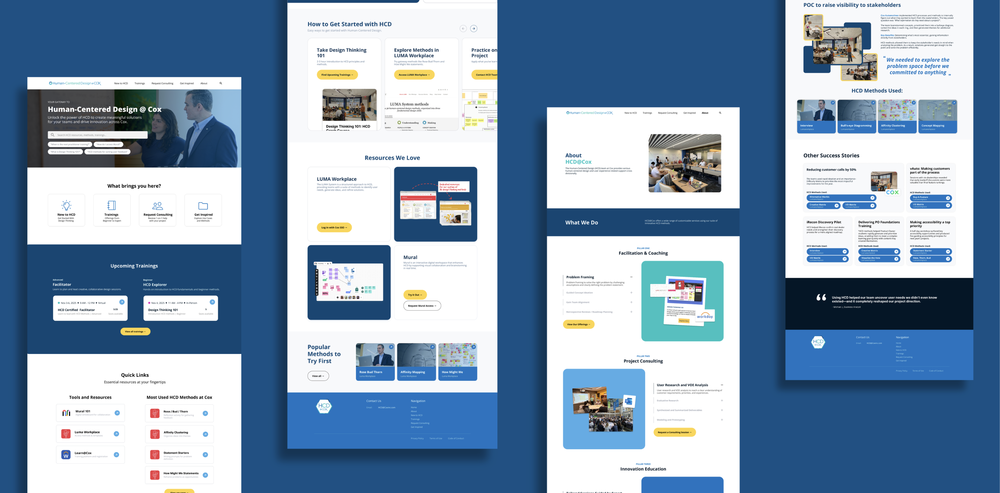
Centralized HCD resource hub homepage, 'New to HCD' page, 'About HCD @ Cox' page, and the 'Get Inspired' pageThe Challenge
Cox's Human-Centered Design team was drowning in repetitive support requests. Resources were fragmented across six platforms, employees couldn't find what they needed, and the HCD team spent their time answering "where is this?" emails instead of doing strategic work.
How Might We...
Enable employees to independently access HCD information, reducing operational overhead and empowering the HCD team to focus on strategic initiatives?
Research Approach
I conducted mixed-methods research to understand employee resource-seeking behaviors and HCD team workflow pain points, then validated findings through surveys and comparative analysis.
Uncovered the "why" behind employee behavior, HCD team workflow challenges, and nuanced context that surveys couldn't reveal

Observed actual behavior using think-aloud protocol to map end-to-end journey with friction points across platforms

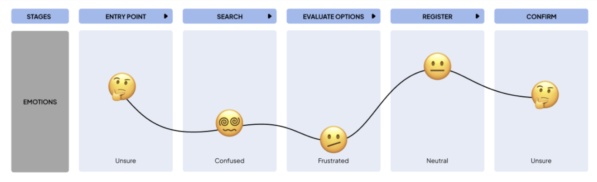
Established baseline metrics on HCD awareness, search behavior, and barriers at scale to validate interview findings
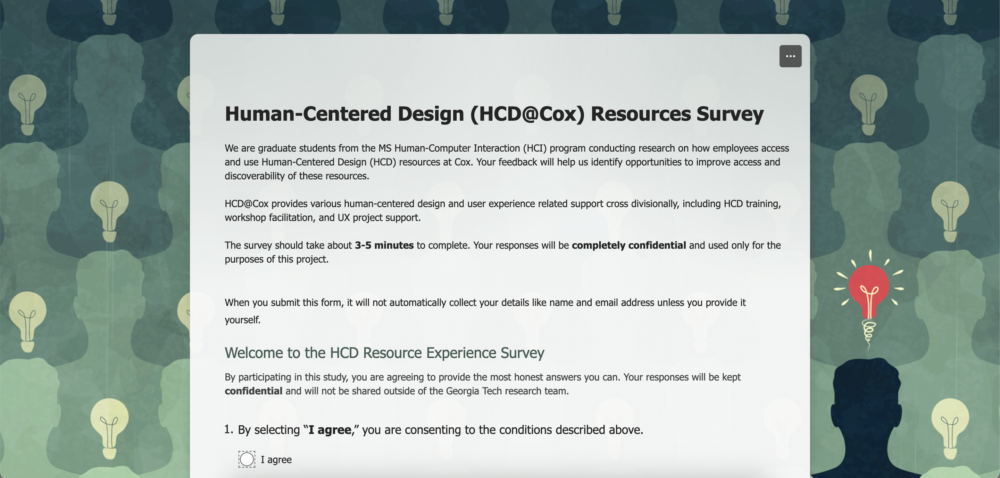
Evaluated Georgia Tech Library, IBM Design Thinking, LinkedIn Learning, and Learn@Cox to identify best practices and gaps

Key Findings
Research uncovered four critical barriers preventing effective resource access at Cox.
Click to expand findings
Fragmented resources drive personal workarounds
Resources scattered across 6 platforms with no centralized access force employees to maintain personal drives and folders, leading to version control issues and content silos.
HCD team drowning in manual overhead
Staff spend hours responding to "where is training?" questions and maintaining spreadsheets instead of focusing on strategic initiatives.
Search experience overwhelms users
Identical visuals and limited filters cause cognitive overload. Users struggle to recognize relevant items quickly in Learn@Cox results.
Employees rely on informal channels over systems
Most employees discover resources through coworkers and managers rather than self-service systems. They actively request AI-powered help and unified hubs for more efficient, autonomous access.
Design Implications
Research revealed 8 core user needs. The solution needed to serve as a single entry point, support multiple discovery modes, minimize friction, and reduce manual overhead.
Click to expand design requirements
Visual Discoverability
Improve resource discoverability through visual thumbnails and smart filtering tools that help users easily scan, compare, and select relevant content
Automated Notifications
Implement automated confirmation and waitlist notifications via real-time updates to reduce manual HCD team involvement
Multiple Discovery Pathways
Introduce multiple discovery options: Browse by Topic, Recommended for You, and Trending Courses to support different user motivations
Intelligent Personalization
Implement intelligent personalization that automatically understands user needs, role, and context to recommend relevant resources
Single Entry Point
Serve as the single entry point for discovery of all HCD resources across divisions
Self-Service Support
Limit staff involvement in routine requests to reduce manual overhead
Low-Friction Access
Minimize friction by ensuring resources are findable in 2 clicks or less and providing contextual help at any point of need
Personalization & Reusability
Enable personalization, reusability, and clear labeling of current/official versions
Ideation & Concept Development
Co-Creation with Stakeholders
We brainstormed solutions with the HCD team to understand constraints, past attempts, and technical feasibility within Cox's ecosystem.
 Virtual brainstorming session with HCD team on Microsoft Teams
Virtual brainstorming session with HCD team on Microsoft Teams
Three Concepts
After team ideation and dot voting, we developed three approaches and gathered stakeholder feedback through independent breakout sessions.
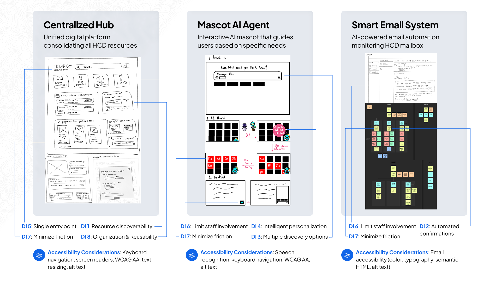
Concept A: Centralized Hub | Concept B: AI Mascot Agent | Concept C: Smart Email SystemWhy the Centralized Hub Won
Stakeholders valued the hub's ability to serve as a single entry point, support diverse discovery modes, and integrate with existing Cox systems. While AI features generated excitement, the hub provided the foundational infrastructure needed before adding intelligent enhancements.
From Wireframes to High-Fidelity
Wireframe Feedback Sessions
I tested low-fidelity wireframes with 2 Cox employees using task-based scenarios and think-aloud protocol to validate information architecture.
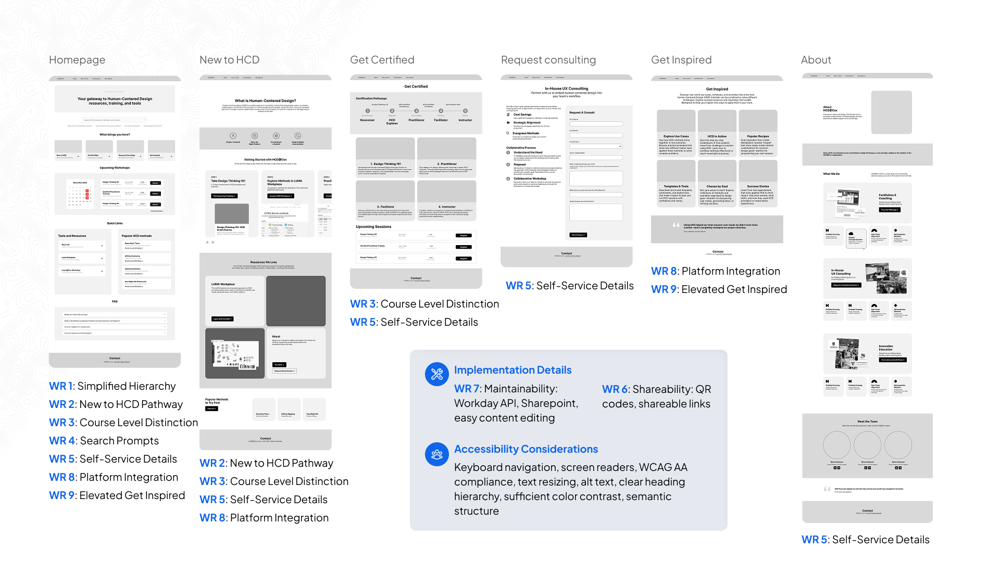
Homepage, New to HCD, Trainings, Get Inspired, Request Consulting, About pagesWhat Worked
Users immediately understood the four motivation-based pathways, successfully navigated to resources in 2 clicks, and praised the workshop calendar visibility
What Needed Refinement
Visual hierarchy felt cluttered, terminology inconsistencies caused confusion, and critical sections like FAQ were buried too low on pages
The Solution
A centralized hub consolidating all resources with multiple discovery pathways and self-service features to reduce manual team involvement.
Multiple Discovery Pathways
Four motivation-based entry points (New to HCD, Trainings, Request Consulting, Get Inspired) guide users based on their needs and experience level.
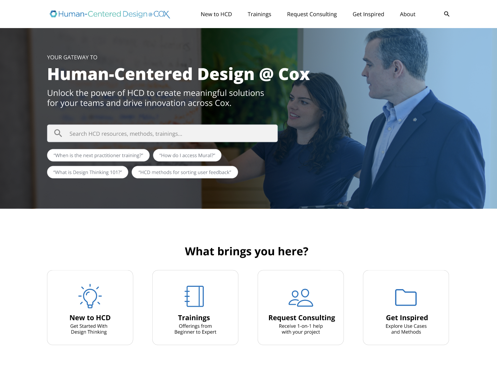
Homepage pathways sectionNew to HCD Onboarding
Dedicated beginner pathway with progressive learning journey, explaining foundational concepts and providing clear actionable steps to get started without overwhelming unfamiliar users.
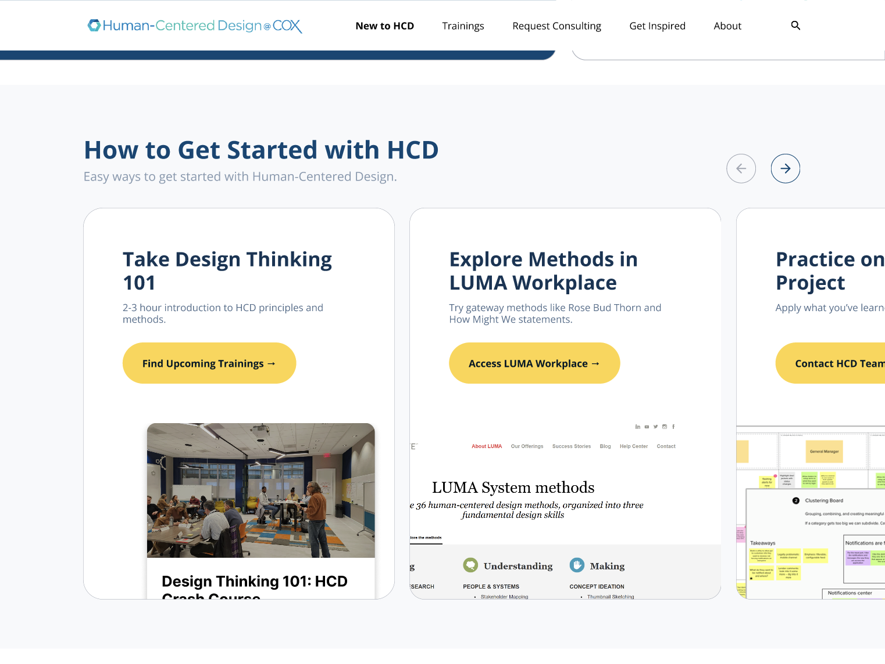
Getting Started steps sectionWorkshop Calendar & Registration
Visual certification timeline with direct registration links and real-time availability, eliminating manual spreadsheet tracking.
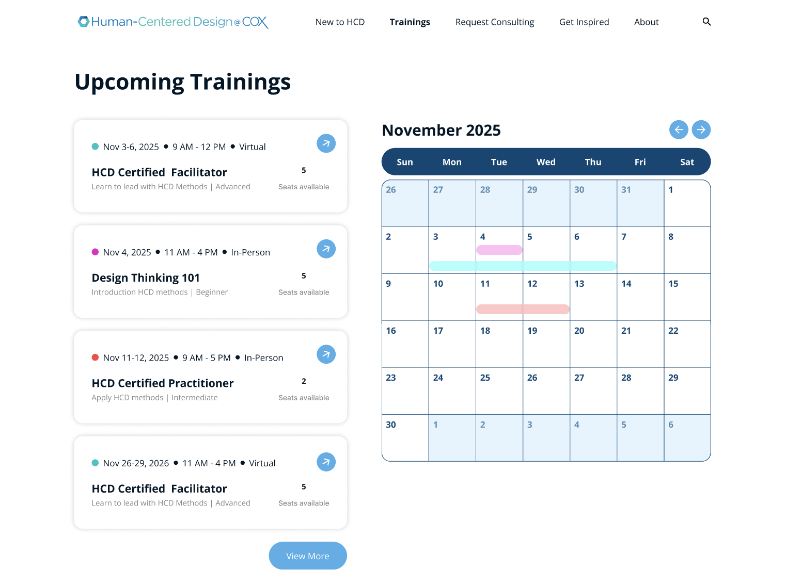
Interactive workshop calendarSelf-Service FAQ & Resources
Quick links to external tools, popular methods, and FAQ section enable independent access without team support.
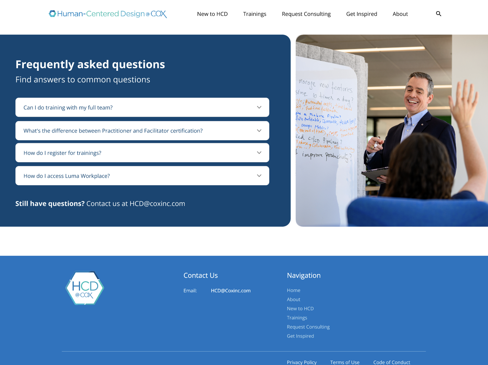
FAQ sectionReal Cox Project Inspiration
Case studies from different divisions showcase HCD methods in action with direct links to templates and tools.
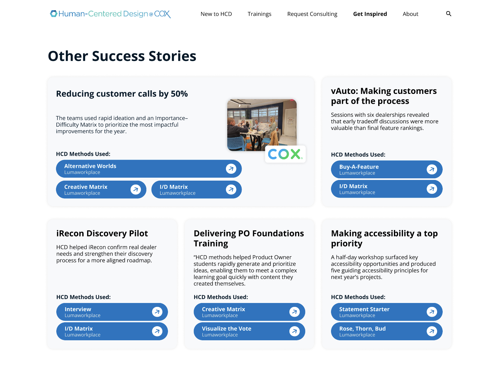
Project case studies galleryCohesive Visual Language
Built a comprehensive design system to ensure consistency across all pages and enable efficient development handoff.
 Typography, color palette, and spacing system
Typography, color palette, and spacing system
Validation & Testing
Heuristic Evaluation
3 HCD team experts independently evaluated the prototype against 7 usability heuristics to identify violations before user testing.
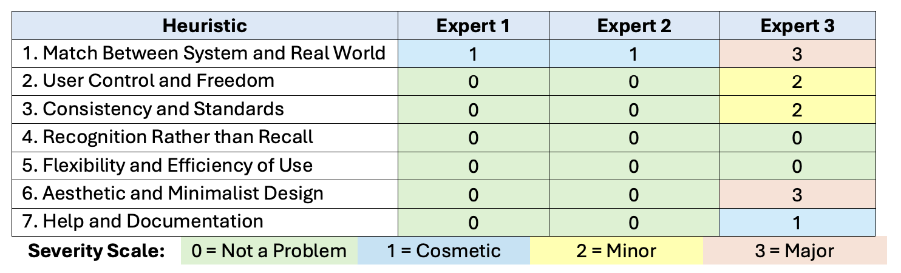
Severity ratings across 3 evaluatorsUsability Testing
4 Cox employees from different divisions completed task-based scenarios using think-aloud protocol to validate navigation, terminology, and overall effectiveness.
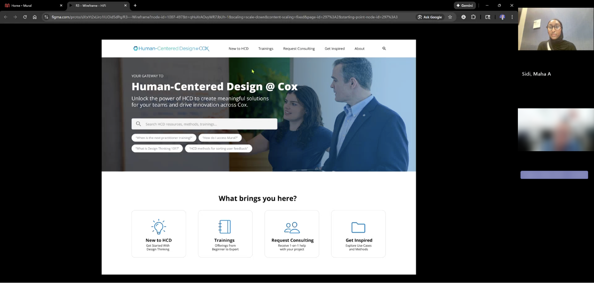
Moderated testing sessions on Microsoft TeamsSystem Usability Score (Grade A+)
Excellent usability
Design Recommendations
Testing revealed 4 priority areas for refinement before production implementation.
Click to expand recommendations
Visual Affordance
Ensure consistent interaction patterns - non-clickable elements should look distinct from buttons to prevent user confusion
Terminology Consistency
Standardize "workshops" vs "trainings" usage throughout and replace vague labels with action-oriented language
Content Hierarchy
Move Popular Methods and FAQ higher on pages, reduce image sizes to minimize scrolling, and fix home button functionality
Contextual Information
Add foundational HCD explanations, concrete project outcomes, and training format/duration details
Impact & Outcomes
For Employees
Resources now accessible in 1.35 clicks instead of fragmented searches. AI search and FAQ answer routine questions without waiting for email responses. Multiple discovery pathways support different learning styles and experience levels.
For HCD Team
Automated self-service features reduce time spent on repetitive support requests. Team capacity freed up for strategic initiatives. Centralized platform eliminates need to manually curate and send resource links.
Lessons Learned
Enterprise Constraints Shape Solutions
Balancing technical feasibility, organizational politics, and user needs required continuous stakeholder collaboration and realistic scoping
Feedback Catches Blind Spots
Testing with fresh eyes revealed terminology confusion and navigation issues we'd overlooked while deeply focused on design decisions
Task Analysis Reveals Truth
Observing actual behavior uncovered workarounds and pain points that users didn't articulate in interviews, shaping critical design decisions